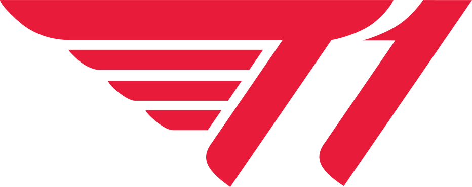

LCK
- T1
- Geng
- Kt
- DK
- Hle
- Kdf
- Bro
- Ns
- Fox
- Drx


T1
2012년 후반기 SK telecom T1이라는 이름으로 창단되었다. 2013 LCK 서머 우승 이후 리그 오브 레전드 시즌3 월드 챔피언십 우승까지 달성하면서
LCK 팀들 중 최초로 월드 챔피언십과 메이저 국제 대회를 우승한 팀으로써 한 해를 제패함과 동시에 이후 5년간 지속되었던 리그의 기나긴 황금기를
동시에 열어젖히는 신호탄을 쏘아올린 LCK의 황금기를 상징하는 최고의 팀이 되었고, 2015년 통합 팀 체제 구축 이후부터 2017년 초중반까지
단순 국내만이 아닌 전 세계적인 수준으로 공인받을만한 왕조로써 그 명맥을 구가했다. 또한 우승을 달성했음에도 평가가 갈렸던 시절과 극심한 수준의 침체
역시 존재하지만 암흑기가 전성기의 찬란한 광휘를 가리지 못하고 있고,
4대 메이저 리그로 꼽히는 자국 리그인 LCK를 비롯한 전 세계의 수많은 리그 오브 레전드 프로 팀 중 명문 팀을 꼽으라고 하면 반드시 언급되며,
지역을 막론한 수많은 팬과 인지도를 거느리고 있다.타팬들에게는
'공공의 적' 내지는 '최종 보스'로 간주되고 있으며, 그간 퍼포먼스로나 족적으로나 역대 최고와 최강의 편린을 통해 LoL e스포츠 역사에 거대한 획을 그은 팀이다.